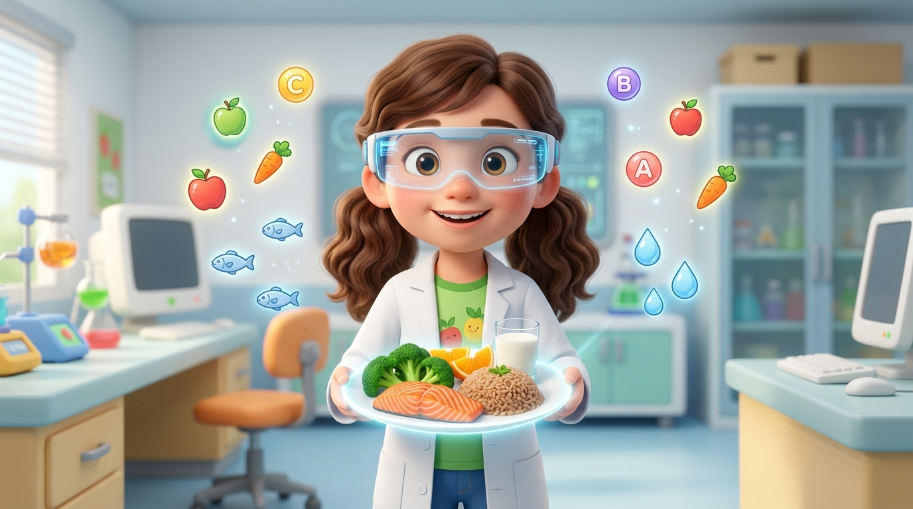

วิธีเล่นเกม AR แบบสัมผัส (ป.6)
📷 1. เปิดกล้อง AR (สัมผัสโดนภาพแล้วลากได้ทันที)
กดปุ่ม "เปิดกล้อง AR" แล้วยกมือขึ้นหน้ากล้อง เมื่อมือสัมผัสโดนภาพอาหาร ภาพจะติดมือและลากไปวางลงในถังสารอาหารได้ทันที หรือจะกำมือ/จีบนิ้วเพื่อจับก็ได้
👆 2. โหมดสัมผัสหน้าจอ / เมาส์ (Touch Screen Drag)
หากเล่นบน iPad, แท็บเล็ต, จอสัมผัส หรือคอมพิวเตอร์ สามารถใช้นิ้วแตะสัมผัสโดนภาพอาหารแล้วลากไปวางได้ทันทีแบบลื่นไหล 100%
🎯 3. เรียนรู้ 5 โหมดตรงตามบทเรียน สสวท.
- แยกสารอาหาร 6 หมู่: ลากอาหารใส่ถังสารอาหารที่ถูกต้อง ทำคอมโบและเรียนรู้ประโยชน์
- จัดจานสุขภาพ: จัดสัดส่วนอาหารตามธงโภชนาการ และควบคุมพลังงาน 500-600 kcal
- หมอน้อยรักษาโรค: วิเคราะห์อาการขาดสารอาหาร แล้วเลือกอาหารมารักษาคนไข้
- ห้องทดลองเคมี: ทดสอบแป้ง (ไอโอดีน), โปรตีน (ไบยูเรต), ไขมัน (กระดาษ)
- แบบทดสอบ & เกียรติบัตร: ตอบคำถาม 10 ข้อ แล้วสร้างเกียรติบัตรพร้อมพิมพ์ชื่อได้จริง